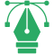

Academico
- Enseñanza de clases magistrales a estudiantes de las áreas de ingeniería, ciencias, informática, arte y diseño.
- Led la revisión de los estándares de contenido educativo, el plan de estudios de instrucción y las evaluaciones de los estudiantes.
- Planes de lecciones desarrollados integrales que incorporan las últimas investigaciones en el plan curricular.
- Proyectos de investigación gestionados y presentación de resultados de estudios.
- Convertí el programa de enseñanza asignado en contenido interactivo de aprendizaje electrónico.
- Instituyó un sistema de evaluación del aprendizaje aumentando la competencia académica.
Desarrollo
- Aplicaciones de desarrollador Realidad extendida.
- Desarrollador de plataformas tecnológicas en el área de software.
- Algoritmos desarrollados en eficiencia de software.
- I contribuyó a la redacción de código limpio y eficiente, mejorando el rendimiento del sistema.
- Convertí el programa de enseñanza asignado en contenido interactivo de aprendizaje electrónico.
- Colaboré con un equipo para implementar un nuevo software.
Administración de Proyectos
- Gestión de equipos de datos técnicos y toma de decisiones.
- Nuevos técnicos de laboratorio capacitados, mejorando significativamente las operaciones de laboratorio y las configuraciones de experimentos.
- Metodología ágil con Asana o Trello.
- Proyectos de gestión con Microsoft Project.
- Implementación de SCRUM.
Análisis de Datos
- Automatización del proceso de datos entre las distintas fuentes.
- El análisis de datos biomédicos para el estudio en cáncer de garganta.
- Datos procesados para uso en modelos de aprendizaje automático que mejoran la precisión de la predicción.
- Análisis de datos en productos biomédicos como electroencefalograma (EEG), electromiografía (EMG).
- Análisis de datos para la predicción de la calidad del aire en sistemas meteorológicos.